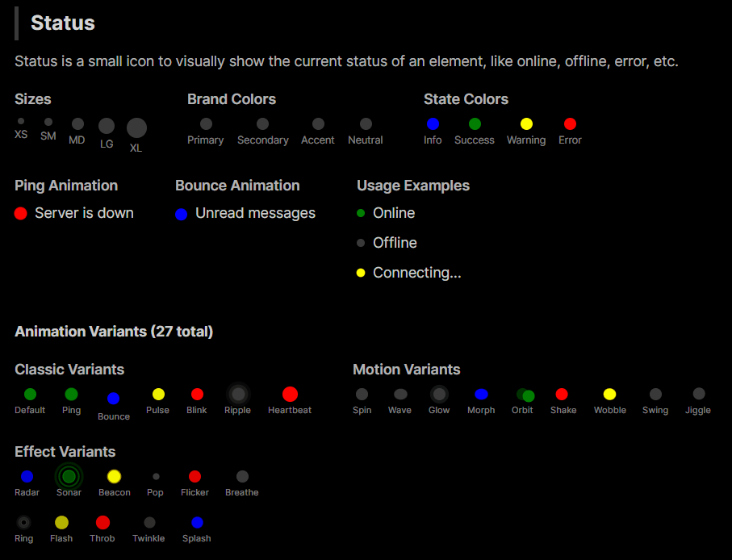

DaisyStatusIndicator
Overview
DaisyStatusIndicator shows a status dot with 27 animation variants. It supports 9 colors and 5 sizes, making it suitable for online/offline markers, alerts, or activity indicators.

Options
| Property |
Description |
Variant |
Animation style: Default (static), Ping, Bounce, Pulse, Blink, Ripple, Heartbeat, Spin, Wave, Glow, Morph, Orbit, Radar, Sonar, Beacon, Shake, Wobble, Pop, Flicker, Breathe, Ring, Flash, Swing, Jiggle, Throb, Twinkle, Splash. |
Color |
Default, Neutral, Primary, Secondary, Accent, Info, Success, Warning, Error (sets dot fill). Uses shared DaisyColor enum. |
Size |
ExtraSmall, Small, Medium (default), Large, ExtraLarge (adjusts diameter). Uses shared DaisySize enum. |
AccessibleText |
Custom text for screen readers. When null, auto-derived from Color (see below). |
Color Selection Guide
Brand Colors vs State Colors
| Category |
Colors |
Purpose |
| Brand Colors |
Primary, Secondary, Accent, Neutral |
Your app's identity/branding. Customizable per theme. |
| State Colors |
Info, Success, Warning, Error |
Universal semantic meanings for user feedback. |
Brand Colors
- Primary - Main brand color, used for primary actions or active states
- Secondary - Supporting brand color for secondary elements
- Accent - Highlight color for drawing attention
- Neutral - Muted color for less prominent indicators
State Colors
- Info - Informational messages (typically blue)
- Success - Positive feedback, online status (typically green)
- Warning - Caution/attention needed (typically yellow/orange)
- Error - Problems/failures, offline status (typically red)
Recommendation
- Use State Colors (Success, Error, Warning, Info) for actual status meanings (online/offline, errors, alerts)
- Use Brand Colors (Primary, Secondary, Accent) for decorative purposes or to indicate selection/activity without semantic meaning
Animation Variants
Classic Variants
| Variant |
Description |
Default |
Static dot with no animation |
Ping |
Expanding ring that fades out (classic online indicator) |
Bounce |
Dot bounces up and down |
Pulse |
Breathing/pulsing opacity effect |
Blink |
Simple on/off blinking |
Ripple |
Multiple expanding rings |
Heartbeat |
Double-pulse like a heartbeat |
Motion Variants
| Variant |
Description |
Spin |
Rotating dot indicator |
Wave |
Wave-like scale effect |
Glow |
Glowing halo effect |
Morph |
Shape morphing effect |
Orbit |
Small dot orbiting around |
Shake |
Horizontal shake effect |
Wobble |
Wobbling rotation effect |
Swing |
Pendulum swing effect |
Jiggle |
Jiggling effect |
Effect Variants
| Variant |
Description |
Radar |
Radar sweep effect |
Sonar |
Sonar ping effect |
Beacon |
Lighthouse beacon sweep |
Pop |
Pop in/out scale effect |
Flicker |
Random flickering effect |
Breathe |
Slow breathing scale |
Ring |
Expanding ring outline |
Flash |
Quick flash effect |
Throb |
Throbbing intensity effect |
Twinkle |
Star-like twinkling |
Splash |
Splash ripple effect |
Accessibility Support
DaisyStatusIndicator includes built-in accessibility for screen readers. Since status indicators convey meaning purely through color, the control automatically provides semantic text based on the Color property.
Default Accessible Text by Color
| Color |
Default Text |
Typical Use Case |
| Success |
"Online" |
User/service availability |
| Error |
"Error" |
Error states, offline |
| Warning |
"Warning" |
Caution states |
| Info |
"Information" |
Informational markers |
| Primary |
"Active" |
Active/selected state |
| Secondary |
"Secondary" |
Secondary state |
| Accent |
"Highlighted" |
Highlighted items |
| Neutral |
"Status" |
Generic status |
| Default |
"Status" |
Generic status |
Custom Accessible Text
Override the automatic text with the AccessibleText property:
<!-- Auto: announces "Online" -->
<controls:DaisyStatusIndicator Color="Success" />
<!-- Custom: announces "User is available" -->
<controls:DaisyStatusIndicator Color="Success" AccessibleText="User is available" />
<!-- Custom: announces "Server offline" -->
<controls:DaisyStatusIndicator Color="Error" AccessibleText="Server offline" />
<!-- Custom: announces "3 unread messages" -->
<controls:DaisyStatusIndicator Color="Primary" AccessibleText="3 unread messages" />
Quick Examples
<!-- Basic status colors -->
<StackPanel Orientation="Horizontal" Spacing="8">
<controls:DaisyStatusIndicator Color="Neutral" />
<controls:DaisyStatusIndicator Color="Success" />
<controls:DaisyStatusIndicator Color="Warning" />
<controls:DaisyStatusIndicator Color="Error" />
</StackPanel>
<!-- Classic animations -->
<controls:DaisyStatusIndicator Color="Error" Variant="Ping" />
<controls:DaisyStatusIndicator Color="Info" Variant="Bounce" />
<controls:DaisyStatusIndicator Color="Warning" Variant="Pulse" />
<controls:DaisyStatusIndicator Color="Success" Variant="Heartbeat" />
<!-- Motion animations -->
<controls:DaisyStatusIndicator Color="Primary" Variant="Orbit" />
<controls:DaisyStatusIndicator Color="Accent" Variant="Wave" />
<controls:DaisyStatusIndicator Color="Info" Variant="Glow" />
<!-- Effect animations -->
<controls:DaisyStatusIndicator Color="Success" Variant="Sonar" />
<controls:DaisyStatusIndicator Color="Warning" Variant="Beacon" />
<controls:DaisyStatusIndicator Color="Error" Variant="Flash" />
<!-- Compact sizing -->
<controls:DaisyStatusIndicator Size="ExtraSmall" Color="Success" Variant="Ping" />
<controls:DaisyStatusIndicator Size="Large" Color="Primary" Variant="Ripple" />
Tips & Best Practices
- Use Ping or Ripple for attention-grabbing alerts.
- Use Pulse or Breathe for subtle activity cues.
- Use Heartbeat for health/vital status indicators.
- Use Sonar or Radar for scanning/searching states.
- Use Flash or Beacon for urgent notifications.
- Keep indicators small near text/icons (ExtraSmall/Small) and larger for standalone badges.
- Place inside
DaisyIndicator when overlaying on other controls (avatars/cards).